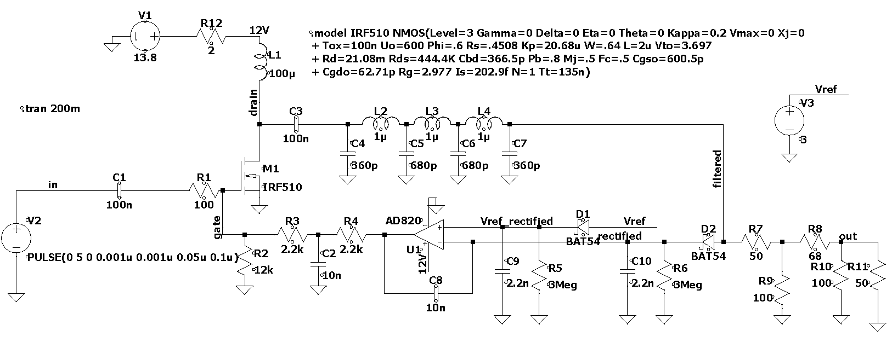
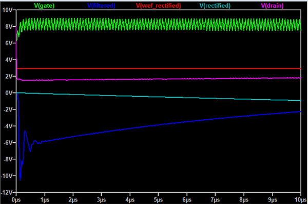
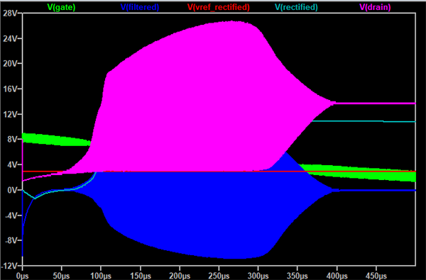
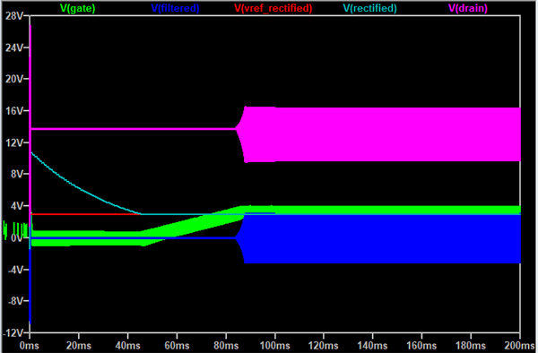

A while back I built up a circuit intended to prototype a leveling circuit that could program the output level using a dc control voltage. Hans Summers showed such a circuit for 7 MHz, and I thought it could be a nifty thing to have around. I made some implementation error in my prototype that made this a frustrating experience. My plan now was to revisit this circuit together with trying to get LTspice working for me, and use this to understand both more of the circuit and learn some useful software skills.
This is the circuit, modified only slightly, for LTspice:

I found the IRF510 spice model on the internet.
Steady state analysis of this circuit is deceptively straight forward. The MOSFET amplifies, a filter shapes the output into a sine wave, and D2 then rectifies and present a peak voltage to the negative input of the op-amp. This is compared to the voltage reference (also through a diode for symmetry), and then the op-amp adjusts the bias of the MOSFET to ensure that the peak voltage of the filtered output has the level controlled by the voltage reference at the positive input of the op-amp.
This circuit does not fit well with an AC analysis in LTspice, since the DC operating point at the negative input clearly is 0V. Instead I would like to simulate a transient analysis.
Below is the first type of plot of how the circuit starts up I made.

At first, this seemed like a failure. The MOSFET has a volt and a half of 10 MHz signal at a DC level of 8V on the gate, still there is no output. How can that be? And there is no output, apart from an initial negative spike. The op-amp cannot deliver more bias, and it just seems non-functional.
If we expand the time window to 500 micro seconds, we see more (and violent) action.

From this picture it is clear that at initial startup, the circuit is constrained by the voltage available at the drain because of the choke on the supply. With a bit more time, that voltage level eventually get to where the MOSFET can amplify (around 70 us), and we see wild voltage swings at the drain and also the filtered output. The rectified output reaches almost 12V.
But then, at about 300us, the amplification starts to turn back, and at 400 us there is only the DC operating voltage left at the drain since the gate level is down to a level where the MOSFET is not turned on.
Simulating 500 us of a 10MHz requires a bit of computation time. And as we saw, it was disappointing in that we did not achieve proper regulation at the end of the period. So what if we instead attempt to simulate a much longer startup period? This is inconvenient, since my computer only can simulate at around 42 us/s. And even redrawing the screen as the simulation progresses is very slow, since LTspice doesn’t appear to decimate the simulations before redrawing, so that is also very slow.

Here we see that for the first 40 ms, we need to wait for the rectified output to fall down to the reference level. After the initial disturbance we saw above, this level takes time to go into the R6 resistor. This makes sense, since the time constant of C10 and R6 is about 7ms.
When the rectified filtered output reaches the reference level, for a while the bias at the MOSFET gate slowly starts to ramp up. At around 85ms, we see some serious amplification, and a few ms after that the circuit appears to have reached steady state with almost 6V pp at the filtered output. The circuit keeps its regulated level for the rest of the simulation period.
Would there be advantages to reduce the time constant to reach regulation earlier? I have experimented with smaller (and much smaller) values of R6. Everything is faster, but the problem is then that there are more rapid changes in the current of D2, and this induces a modulation of the output.